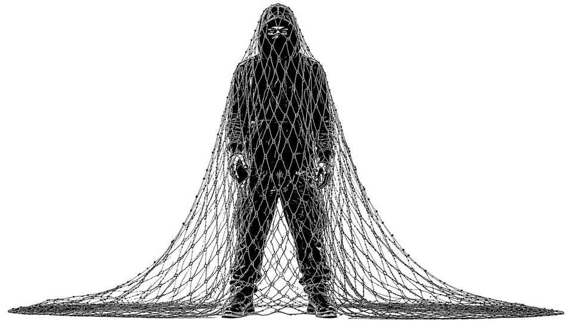

Has London passed peak phone snatching?
There are promising signs

Sep 3rd 2026
London is far safer than it was. But one crime category has exploded in recent years: theft. Both shoplifting and “theft from the person” (mostly phone snatching) have roughly doubled since 2020. In the year to July 2026, rates of shoplifting hit a new high. But London’s rolling 12-month total for personal theft has fallen by 27% from its peak in January 2025 (see chart).

The fall appears to be due to improved police tactics. Phone snatchers specialise in drive-by theft—using high-powered electric bikes to silently approach, and speed away from, pedestrians on their phone. For the police, chasing such thieves has been a losing battle. Officers aim to be at emergency calls within 15 minutes. That is plenty of time for someone on a 50mph e-bike to make their escape, zipping down alleyways and through heavy traffic to outmanoeuvre chunky police vehicles.
Tactics have had to adapt. The Metropolitan Police has been building up its own e-bike stockpile to chase down suspects. It has also stepped up efforts to confiscate, en masse, those used by criminals. And since October it has deployed drones to follow thieves from a distance and pick them up once they let down their guard. Combined with targeted policing in the tourist-heavy areas where most phone snatching occurs (such as Westminster), these new strategies appear to be working.
Police officers have also got wise to the business model of phone snatching. What looks like petty theft in fact depends on an organised network of handlers exporting stolen phones abroad. So a few arrests higher up the chain can have an outsize effect. In October the Met arrested 18 people suspected of sending up to 40,000 phones to China (50% of London’s total).
Almost everyone in London knows somebody who has had their phone stolen. That goes a long way to explaining rising feelings of insecurity in the capital and beyond. Shoplifting remains a blight. But when it comes to phone snatching, at least, London appears to be on the right track. ■